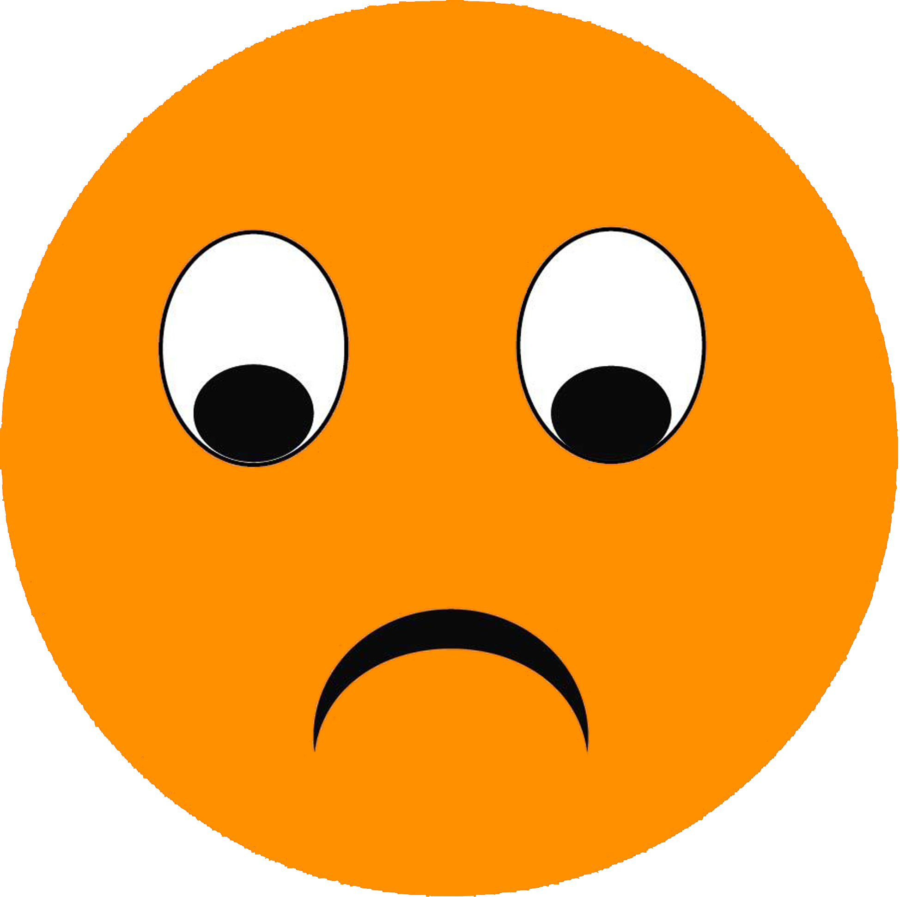

{{daily.studyword}}
{{daily.shouldstudy - daily.studyword}}
{{daily.studyword}}/{{daily.shouldstudy}}
复习次数:{{daily.studytime}}
{{studyWord.word.spelling}}
英[{{studyWord.word.ukphonetic}}]
美[{{studyWord.word.usphonetic}}]
{{studyWord.example.en}}
逾期{{Math.abs(this.studyWord.intervalday)}}天
：稍想片刻后，长按 (鼠标左键)上方空白处查看释义。
查看释义
{{studyWord.word.spelling}}
、
查看单词详情
英[{{studyWord.word.ukphonetic}}]
美[{{studyWord.word.usphonetic}}]
释义
{{studyWord.word.paraphrase}}
提示例句
{{studyWord.example.en}}
{{studyWord.example.cn}}
{{studyWord.day_studycount}}次
今天复习
{{oneWordThinkTime}}
思考时间
看到单词立马能想起意思(选择后今天不再复习)
片刻思考后能想起意思

对单词有模糊印象，但不确定具体含义
不知道这个单词，没有任何印象
了如指掌
恍然大悟
模模糊糊
茫无所知
单击选中选项，双击学习下一个单词。